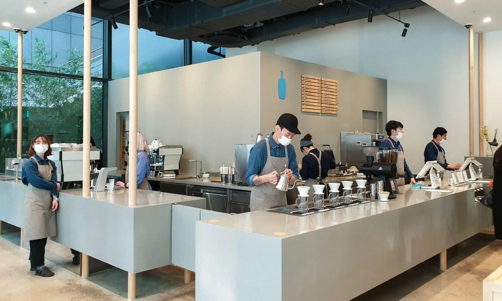

Our Story
Day Row Coffee was created from a simple motivation to bring more intention into everyday routines. Inspired by the fast pace of Seoul, we wanted to open a space where people could slow down and reconnect over a thoughtfully made cup of coffee. Built on a passion for carefully sourced beans, precise roasting, and mindful brewing, every cup highlights rich flavors and smooth finishes. More than just coffee, Day Row is about creating a refined yet welcoming place for meaningful daily moments.